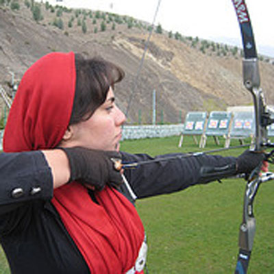
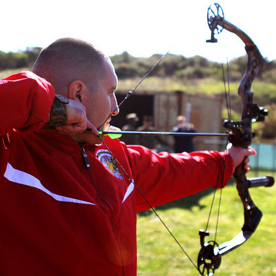

instructors
Amy Smith: Amy truly has a passion for archery. She comes from a long line of hunters, fisherman, and trappers of Canada. Amy places a strong emphasis on safety and is enthusiastic about teaching. Amy also loves fitness, and has been a YMCA group exercise and personal trainer for over 18 years.

Derek Jenkins: Derek is a Washington native and an experienced outdoorsman with many years hunting, fishing, skiing, canoeing, archery, shooting and minimalistic camping. His skillful mastery of bushcraft and wilderness survival knowledge helps define his character. He enjoys handcrafting his own long bows, flint knapped primitive arrows and making custom leather products.
Doona Bae: Doona is a passionate bow hunter and avid target archer now for many years. She is a level two NAA Instructor. Doona has competed in both State and National Indoor & Outdoor level Archery Tournaments and IBO/3D Tournaments. She enjoys working with all levels of archers.
Nathan Lee: Nathan is an USA Archery Certified Level 3 NTS – Coach and has been teaching archery since 2009. He has been interested in Archery since he nocked his first arrow while a Boy Scout at Scout camp. Nathan has many years of experience teaching people of all ages, experience gained as a Martial Arts Instructor and Studio Manager.